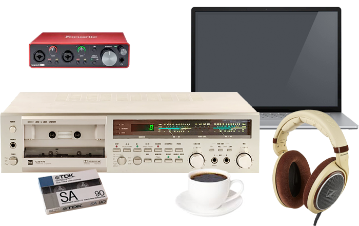
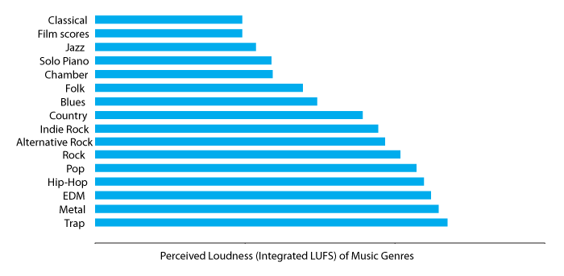
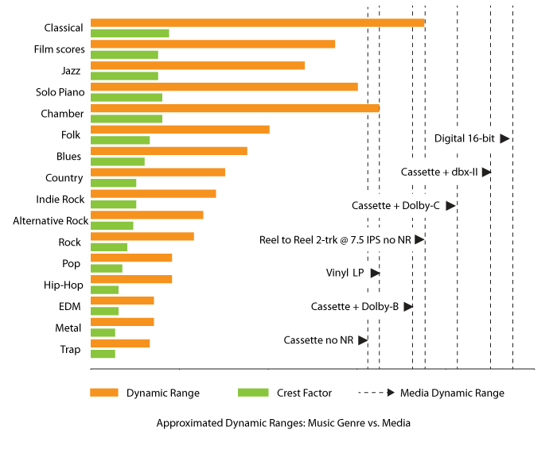
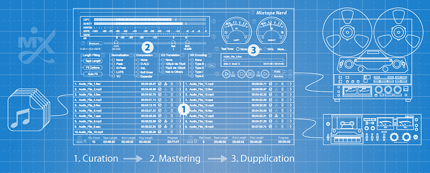
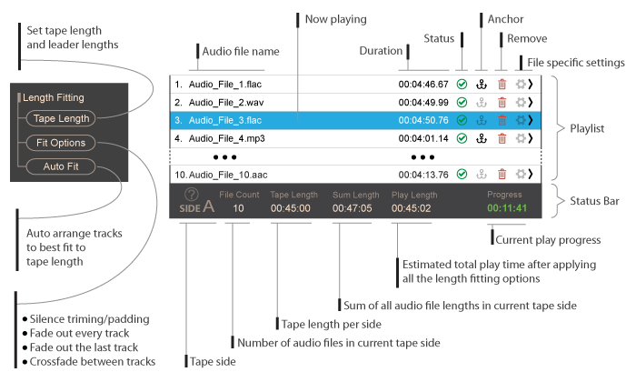
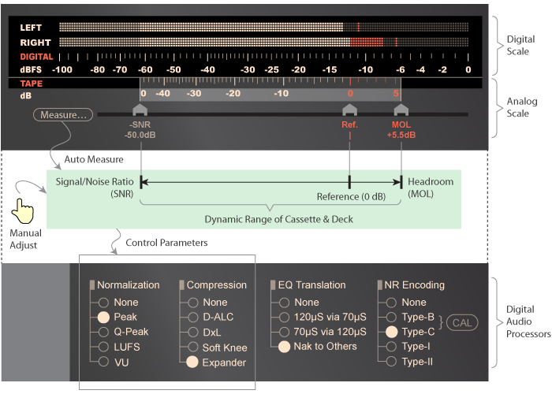
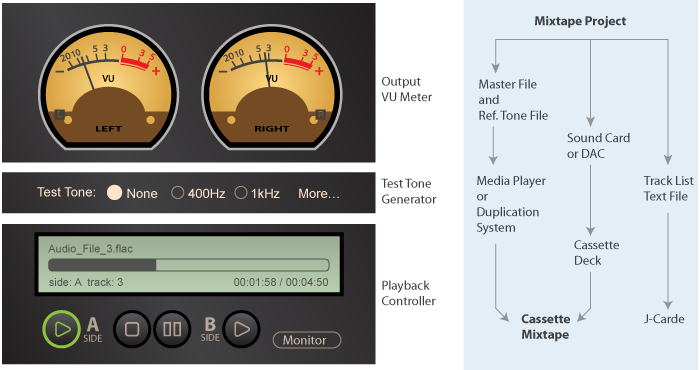
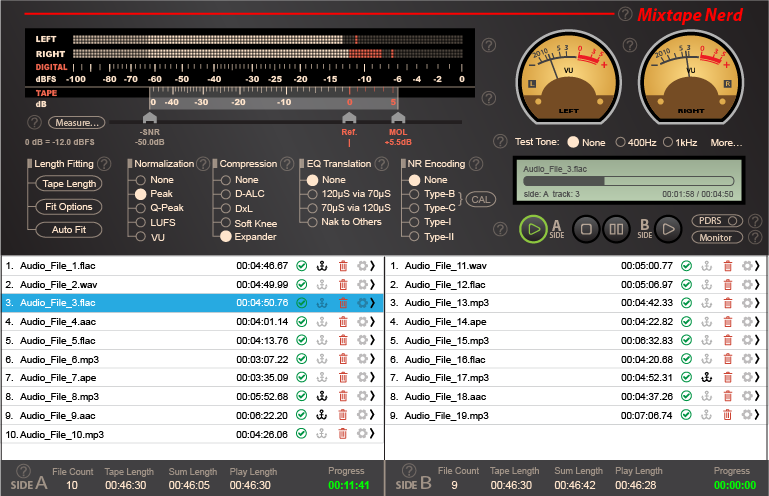

Cassette Mixtape — An Analog Hi-Fi Craft in the Digital Age |
||
Mastering digital-to-cassette mixtape using MixtapeNerd software | ||
| Some words in our vocabulary evolve rapidly in meaning. Today, we still say "mixtape" when we really mean "playlist" — something we can assemble in seconds, shuffle at will, skip without thinking, and replace tomorrow, yet lacking the tactile and ritualistic quality of cassette tapes that gave the word its name. Today, recording a cassette mixtape from digital audio files may sound absurd at first, but this can be a conscious gesture against the snackification of music consumption — an attempt to recover music as a carefully curated artistic journey that unfolds with patience, sequence, and commitment. | ||
 | ||
Cassette deserves a renewed attention |
||
For a long time, the compact cassette has been an underappreciated audio medium that rewards commitment. Recording a serious cassette mixtape from digital audio files requires careful preparation and attention to detail. Since portability is no longer the primary reason we favor this format today, it is worth exploring its deeper potential and redefining what we can expect from it. The devil is in the details. | ||
From trial-and-error to informed decisions |
||
Traditionally, making cassette mixtape is largely an empirical craft. You learn your deck, you learn your tape, you watch the meter, you listen carefully. Eventually, you develop an intuition for how hard you can push a particular combination of equipment and material. This can work remarkably well. But intuition has its limitations: you don't know what you can't hear, or what a momentary meter can't reveal. What sounds good on one system at one moment doesn't necessarily translate well across different systems or to different listeners. If something is wrong but unnoticed at the beginning, fixing it may mean re-recording the entire side again. So you keep testing, adjusting, and trying again. Getting it right on the first pass therefore becomes a highly desirable pursuit. That is where the MixtapeNerd software project begins. Modern digital technology gives us another possibility. Before anything is recorded onto tape, the entire program already exists as data. We can analyze it. We can measure its peaks, dynamics and average levels. We can inspect the tape and recorder, we can estimate how much headroom is available. We can predict how well the program will fit the physical medium, even making adjustment if necessary. In other words, we can make informed decision before the tape starts moving. This does not replace listening. It simply gives some useful information to work with. | ||
Why the music itself matters |
||
Before recording an analog mixtape, determining the optimal recording level is such a fuzzy task that even a mixtape veteran rarely nails it on the first try. In fact, there is no single recording level that works equally well for every kind of music. To our ears, modern pop, acoustic folk, and classical can have very different loudness characteristics. | ||
 | ||
To a cassette, however, music that sounds loud does not necessarily require more tape headroom. Conversely, music that sounds relatively quiet can contain very sharp peaks. The important question is: how much of the tape's available operating range does the music actually needs? | ||
 | ||
Heavily compressed modern pop music may have relatively little difference between its average level and its peaks. Acoustic folk music may contain much larger changes in level. Classical music can have an even wider range. This is a reason why simply watching a cassette deck's meter and turning the recording level can be surprisingly unreliable. Given the cassette’s limited dynamic range, the signal needs to be recorded loud enough to stay well above tape noise, but not so loud that sharp peaks drive the tape into excessive saturation. Finding that balance is one of the fundamental challenge of cassette recording. | ||
The sweet spot between hiss and saturation |
||
Unlike semiconductor-based amplifiers, tape saturation is not simply a wall where everything suddenly becomes distorted. As the signal approaches the tape's limits, distortion gradually increases. Cassette tape also has a characteristic nonlinear behavior that many listeners find musically pleasant. This psychoacoustic effect can create an illusion that higher recording levels are "better than source", encouraging levels to be pushed beyond what would otherwise be considered prudent. Tape specifications therefore provide useful measurements such as Maximum Output Level (MOL) and Signal-to-Noise Ratio (SNR). Together, these measurements tell us something important about the practical operating range of a particular tape and recorder combined. The difficulty is that real music is not a test tone. Its peaks are constantly changing. A short transient may be difficult to predict simply by looking at an average level. This is where digital analysis becomes useful. Instead of asking: Once we start thinking this way, something else becomes clear. A cassette is not simply a container into which digital audio is poured. It is a format with its own limitations and characteristics. Preparing music specifically for that format is therefore a distinct step, much like the format-specific mastering in the recording industry — the source material has to be adapted to the destination in order to sound "right". Sometimes it means nothing more than adjusting levels, if the original material is already perfectly suitable and should simply be left alone. Sometimes it means dealing with a large dynamic range mismatch. The important thing is that these decisions can be made deliberately. MixtapeNerd is designed around this idea. | ||
Three stages of making a successful mixtape |
||
MixtapeNerd organizes the process into three stages: | ||
 | ||
| The idea is simple: first decide what belongs on the tape, then prepare the music for the medium, then make and verify the recording. | ||
01-Curation |
||
Although the concept sounds simple, assembling a mixtape from digital files presents practical time-fitting challenges. MixtapeNerd addresses this with two playlist builders, one for each side, that continuously show how much playing time is available. Once you have dozens of tracks, there can be millions of possible ways to divide them between Side A and Side B. Finding the best combination with a spreadsheet can be a surprisingly tedious task, or you can let MixtapeNerd find one for you with a single click. But even the best combination may not be a perfect fit, and that’s where the catch is. If there is a little time left over at the tape's end, the app can automatically distribute the unused space as short silent separators between tracks. If the audio program is slightly too long, it can look for practical ways to recover time by trimming unnecessary silence, applying fade-out to every track or only the final track, or overlapping consecutive tracks by applying smooth crossfades. The goal is not to force the music conform blindly to the tape. It is to help the music and the physical format work together. The result should feel intentional when the tape reaches the end of each side — not like the music simply ran out of room. | ||
|  | ||
02-Mastering |
||
Once the playlist is established, the next question is: how should this particular music be recorded onto this particular tape using the particular recorder? MixtapeNerd can analyze the complete program using industry-standard measurement including Peak, Quasi-Peak, RMS, VU, LUFS and Crest Factor. These numbers are not there to turn music into mathematics. They provide a way of seeing characteristics that are difficult to judge reliably from a short listening session or watching a momentary meter. The app can then help determine the practical operating range of the cassette and deck, using professional measurements such as MOL and SNR relative to a Reference Level. For users with a three-head cassette deck and off-tape monitoring, MixtapeNerd can go further by helping measure the actual behavior of the recording system. Once the source and destination are understood, the app can help match them with level normalization and dynamic-range adapting processors. | ||
|  | ||
The important word here is help. MixtapeNerd does not decide what your mixtape should sound like. It gives you information and tools that make the decision easier. | ||
Normalization: making different recordings live together |
||
Imagine putting together dozens of digital audio files from different sources and discovering that every one was previously mastered at a slightly different level. You can compensate while recording by constantly adjusting the level, or you can let the app do it automatically. Technically, level normalization applies an appropriate gain adjustment to each digital track so the levels of tracks are better matched before they reach the cassette. It’s a lossless process: no new information is invented, and no musical detail is altered. The key is consistency. A mixtape should feel like one continuous listening experience, rather than a collection of tracks with unrelated mastering levels. | ||
Dynamic range: sometimes less, sometimes more |
||
Cassette has significantly less usable dynamic range than modern digital audio. Fortunately, most contemporary music has already been compressed to some degree, which can be comfortably recorded on cassette, so additional compression is often unnecessary. That said, there are exceptions where additional compression can still be beneficial. Some music can have such a big difference between their loudest and quietest parts that they’re difficult to fit onto tape. If the loudest parts are kept at a safe level, the quietest parts can end up getting lost in the tape noise. At that point, some form of compression is going to happen anyway. The question is whether we apply it deliberately and control how it sounds, or let the limitations of the medium compress the recording for us in a less predictable way. Using a compressor carefully lets us manage that process and make the recording work better on tape. The opposite can also be useful. Some music has already been compressed very heavily before it reaches the cassette. A gentle expansion process can sometimes make such material feel less constrained and more comfortable over a long listening session. Neither approach is automatically better. The purpose is simply to make the source and the medium cooperate. | ||
More compression: damage or magic? |
||
If a cassette mixtape is intended for specific listening environments, additional compression can sometimes be beneficial. For example, when creating a mixtape for listening in a car, on public transportation, in a crowded public space ..., applying more compression can improve intelligibility by keeping quieter sounds audible without requiring frequent volume adjustments. You may have noticed that some pre-recorded commercial cassettes can achieve surprisingly “hot” recording levels, even when they use relatively modest tape formulations. Try recording the same music at home, and you may find that even a much better blank tape can't reach the same level without distortion. This can make it seem as though commercial cassettes were recorded using a magically powerful recorder. In reality, one of the key factors is often aggressive dynamic compression, similar in principle to the techniques associated with the “Loudness Wars”. This kind of processing once required audio compression equipment that was not commonly available to home users. With MixtapeNerd, however, you can now achieve a similar effect easily, if you really want to. | ||
Connecting two worlds |
||
Connecting a cassette deck to a computer for mix-taping is essentially a matter of connecting two linear audio devices in a chain. To make this work properly, their reference levels need to be matched. This can be done by calibrating both devices with the same test tone. The main challenge, however, is accounting for the difference in dynamic range between the two formats. This requires a specialized software audio meter that displays digital and analog level scales side by side. Once the cassette’s maximum output level (MOL) and signal-to-noise ratio (SNR) are entered on the analog scale, the software can automatically map the corresponding dynamic range and reference level to the digital domain. It can then convert these values into the DSP parameters needed for format-specific mastering. When using a 3-head cassette deck with off-tape monitoring feature, the app provides dedicated tools for fine-tuning bias/level, and measuring the deck's safe operating range. You don't have to rely entirely on estimates. You can measure the system you actually own. | ||
03-Duplication: making the actual recording |
||
When the project is ready, MixtapeNerd can export a master audio file for each cassette side, making offline duplication possible. It can also generate an auxiliary calibration file containing a reference tone for calibrating the future duplication system. Alternatively, the app can play the entire project from start to finish, enabling users to record a cassette mixtape directly in real time. With a suitable three-head deck having off-tape monitoring function, the app can also compare the off-tape signal with the original source during recording. The deviations can be visualized along the timeline, making it easier to identify where the physical recording has departed from the digital source. The track list and track durations can be exported to a plain text file for creating a J-card. | ||
|  | ||
Is all this really necessary? |
||
No. And that is an important part of the philosophy behind MixtapeNerd. You can absolutely make a cassette mixtape without doing any of this. You can listen to the source, watch the meters, turn the knob, press Record and enjoy the result. For many people, that is all they will ever need. On the other hand, the cassette was not born for recording digital audio. Making digital-to-cassette mixtape is not always technically safe but the risks are manageable with the right means, which may lie outside our familiar experience. Perhaps it's time to think out of the box and embrace the growing pains. That means, we may need to step beyond our regular comfort zone, and ensure the cassette and deck will work within their comfort zone. This is not effortless though, as we have to understand their "language". Whether the gain justifies the pain is ultimately a personal choice. But it’s always good to have one more option available. | ||
Why not just use existing tools? |
||
Technically, you can. Most of the individual tasks involved in preparing a digital-to-cassette recording can already be accomplished with general-purpose audio apps and plug-ins, at a little to no cost. The problem is the workflow. One program arrange tracks, another analyzes levels, another handles dynamics, something else measures the tape deck. Then you have to move between them, remember settings, maintain a consistent reference and somehow bring everything together at the end. The tools exist, the workflow is the missing piece. MixtapeNerd brings these functions into one environment designed specifically around the digital-to-cassette process. It is designed to start simply. At first, it can look like a playlist app: put some tracks on Side A, put some on Side B, and see how they fit. Then, when you are ready, you can go deeper. You can analyze the music, you can characterize your tape and deck, you can establish a reference level, you can examine dynamics, you can prepare the source for the medium, and you can monitor the recording. The app does not require you to learn everything at once. The workflow can grow with you. | ||
|
 | ||
The goal is not perfection |
||
There is a temptation, when approaching analog recording scientifically, to think that the goal must be perfect technical accuracy. It isn't. A cassette is not a digital file. It has noise, it has saturation, it has frequency-dependent behavior. Different tapes sound different, different decks behave differently. And part of the appeal is precisely that the medium is not perfectly transparent. The goal is not to eliminate those characteristics. The goal is to understand them well enough to make them work for us. A good cassette recording should still sound like a cassette recording. It should simply sound like one that was made deliberately. | ||
A little more science, without losing the craft |
||
MixtapeNerd is not intended to replace the traditional cassette workflow. It complements it. Your ears still matter, your deck still matters, your choice of tape still matters, your taste matters most of all. The difference is that you no longer have to discover every mistake by making a complete cassette first. The software can do some of the tedious investigation beforehand. It knows what the source is doing, what the tape system can reasonably handle, and it can help connect those two things. That is the real purpose of the data-driven approach: not to make music less subjective, but to reduce the amount of uncertainty surrounding the parts that don't need to be subjective. | ||
Is MixtapeNerd for everyone? |
||
Probably not. If your favorite part of making a cassette is simply pressing Record and seeing what happens, there is no reason to change that. MixtapeNerd is for the people who enjoy going deeper. For those who have calibrated a deck and then wanted to know what else could be measured and fine-tuned. For the people who don't mind opening the hood because understanding how something works makes using it more enjoyable. Of course, not everyone has to agree with or appreciate this philosophy in order to make a satisfying mixtape Yet, there is a learning curve, a non-trivial one. To help overcome it, the application comes with documentation, wizard, task-specific guides and online videos. But it does not try to turn cassette recording into a cool operation, nor does it pretend the process is effortless or automatic. Instead, it gives you another way to approach the craft. | ||
Making the first pass count |
||
The ultimate goal of MixtapeNerd is modest. Not to make cassette better than digital, not to make every tape sound identical, not to remove the character of analog recording. It is meant to give you a better chance of getting the recording right the first time. Because when you have spent time choosing the music, arranging the sides and preparing the tape, the last thing you want is to discover after an hour of recording that something could have been avoided. The computer can do the analysis. The cassette can provide the character. And you can make the decisions. That is the idea behind MixtapeNerd: modern tools helping an old format become a little more deliberate, a little more predictable, and perhaps a little more enjoyable. Cassette mixtape may have started as a practical way of sharing music. Today, it can be something else. A small physical object, a carefully planned listening experience, a piece of analog Hi-Fi craft in the digital age. | ||
| http://www.anaxwaves.com/MixtapeNerd | ||
| Anaxwaves | ||
| ||